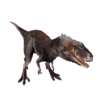

Useful Website
The tyrannosauroid Moros intrepidus is a theropod from the late Cretaceous period. A full-size Moros intrepidus grows to a little under 1m tall, making it one of the smallest dinosaurs in the tyrannosauroid family, only a fraction of the size of its more famous – and far more fearsome – relative, Tyrannosaurus rex.
